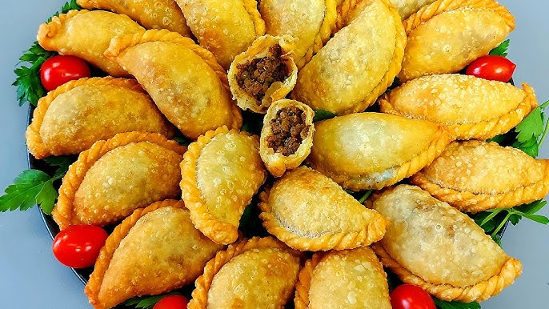

sambusa

300 g Mehl
etwas Salz
wenig Wasser
2 El Olivenöl
Für den Kleber:
1 El Mehl
1 El Wasser
Mehl und Wasser in einer kleinen Schüssel zu einer kleistrigen Paste verrühren.
Für die Füllung:
500 g Rinderhackfleisch
2 rote Zwiebeln,
3-4 Frühlingszwiebeln
1 Tl Salz
1 El gemahlener Koriander
½ -1 Tl Pfeffer ( oder andere Gewürze)
ca. ½ l Frittieröl
Das Mehl für einen Teigballen in eine Schüssel füllen, eine Prise Salz zufügen und vorsichtig so viel Wasser dazugeben, bis ein weicher Teig entsteht. Die Zutaten rasch mit der Hand vermengen und je nach Bedarf noch etwas Wasser oder Mehl dazu geben. So lange kneten, bis ein handlicher Ballen entsteht, der sich weich und trocken anfühlt.